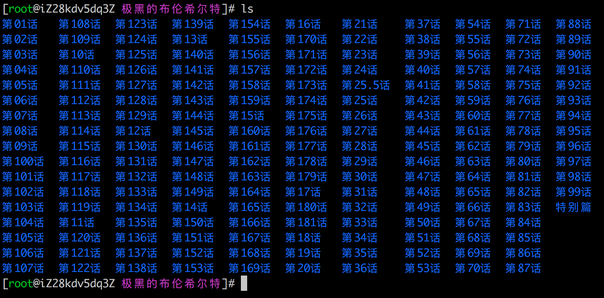

小喵的唠叨话：这次的博客，讲的是使用python编写一个爬虫工具。为什么要写这个爬虫呢？原因是小喵在看完《极黑的布伦希尔特》这个动画之后，又想看看漫画，结果发现各大APP都没有资源，最终好不容易找到一个网站可以看，但是由于网速太渣，看起来额外的费劲。这时候如果能提前下载下来就好了。
先上项目地址（github）：https://github.com/miaoerduo/cartoon-cat 。欢迎大家随时fork、star和指教。
原因就是这样，作为技术喵，任何问题都不能阻碍一颗爱漫画的心。所以问题就来了，挖掘机技修哪家强？ 在bing上搜索Python、爬虫框架。找到大家常用的框架。
Scrapy似乎是个很不错的选择。至于相对于其他框架的优点，小喵没有细查，至少这个框架是之前听过的。但是在实现的时候发现有一些问题，scrapy不能直接抓取动态的页面。小喵需要抓取的网站的漫画都是使用Ajax生成的。需要自己分析各种数据，这个有点麻烦。
那么有没有可以渲染页面的工具呢？像浏览器一样的？有。
这里介绍两个工具：
- PhantomJs，可以理解是一个浏览器。不过它没有界面，我们可以通过js的代码模拟用户的行为。这就要求了解它的api并有js基础了。
- Selenium，这是个浏览器自动化测试框架。它依赖于浏览器（这个浏览器也可以是PhantomJs），通过Selenium可以模拟用户的行为。而且有Python接口，所以相对简单一些。
我们这个爬虫使用 selenium + phantomjs 来实现。哟，这个爬虫软件应该有个响当当的名字。。。就叫 漫画喵 吧，英文名 Cartoon Cat。
下面我们一点点的介绍这个爬虫的实现过程吧。
一、初生-环境搭建
小喵这里选用 Python 作为开发语言，框架是 selenium。原因是 python 经常用来写爬虫，selenium 可以用来模拟用户行为，PhantomJs 是可选的，不过小喵最终会在一个服务器上运行，所以也是需要的。
为了不影响本机上的 python，我们还需要使用 virtualenv 来创建一个独立的 python 环境。具体步骤如下：
1、安装virtualenv
virtualenv 是一个常用的用来创建 python 环境的工具。小喵用这个有两个原因，一是为了不污染本机的环境，二是在本机直接安装库的时候出了一个权限的问题。virtualenv 的安装十分简单，使用 pip 工具就可以安装。
pip install virtualenv待程序执行结束，你就会开心的发现自己已经有了 virtualenv 这个工具了。
2、创建python环境
virtualenv 的使用非常的方便。建立新的运行环境：
virtualenv <env-name>进入相应的独立环境：
source <env-path>/bin/activate执行完第一个指令后，就会创建成功一个 python 环境，执行第二个指令后，就会发现命令行的起始位置有变化。这时候 python、pip 等工具就变成使用这个新环境的了，当然也可以使用 which python 来查看。
3、安装selenium
进入新环境后，pip安装的依赖库都会在新环境中安装，不会影响主机自身的 python。使用 pip 安装 selenium：
pip install selenium至此，我们的基本环境就搭建完了。
4、安装PhantomJs
这个只在从官网上下载就可以：http://phantomjs.org/download.html 小喵的本地实验环境是Mac，所以下载了Mac版本。解压之后就可以使用。
二、寻觅-搜资源
小喵想看的这个漫画貌似各大网站都没有资源，在费了九牛二虎之力后，终于找到了一个网站！http://www.tazhe.com/mh/9170/。每个网站的结构都不相同，因此都需要定制一套爬虫程序。本文的爬虫就只能针对这个漫画网站使用，喵粉们需要爬其他网站的话，需要自己做相应的修改。
三、分析-资源解析
这里需要解析两个页面，一个是漫画的首页，比如前面的：http://www.tazhe.com/mh/9170/ 另一个就是具体章节的页面。
1，首页
为了减小图片的大小，小喵把窗口做了缩放。首页大致是这个样子。
各类信息十分的明了。我们关注的就是下面的漫画列表。通过Chrome强大的审查元素的功能，我们立刻就能定位到章节的位置。（对着感兴趣的位置->右键->审查 就能找到）
可以看到，章节所在的区域的 id 是 play_0，学过前端的童鞋都应该知道，一个页面中 id 通常唯一标示一个节点。因此如果我们能够获取这个页面的话，查找 id 为 play_0 的节点就能一下子缩小搜索范围。 而每个章节的信息都是一个 a 标签，标签的 href 是对应章节的具体网址，标签的文本部分是章节名。这样相对关系就得出了：div#play_0 > ul > li > a。首页的分析就到此结束。
2、章节页面
我们随意打开一个具体章节的页面。比如：http://www.tazhe.com/mh/9170/1187086.html
映入眼帘的是一个很干净的页面（简直是漫画界的清流，好多漫画网站上全部是广告）。我们把鼠标放在图片这个区域->右键->审查。咦，我们的右键怎么按不了？
其实呢，这个现象在小说网站上遇到的机会会更多。当我们看到比较优美的文字或是炫酷的图片，都会下意识的选中->右键->保存。而很多时候，这些资源都是有版权的。并不应该随意的传播（狠狠的打了自己的脸/(ㄒoㄒ)/~~）。因此限制鼠标右键会是一个很简单却有效的办法。那么我们如何绕过这个陷阱呢？
很简单，我们不用右键即可。打开浏览器的开发者工具选项，找到 elements 这个选项。可以看到一个复杂的结构（其实和上面审查元素之后的结果一样）。之后不断的选中标签，当标签被选中时，左侧页面中对应的位置会有蓝色。多试几次，最终就能找到对应的位置。
这是一个 img 标签，对应的 id 是 qTcms_pic。这样找到这个 id，就能找到这个 img 标签，根据 src 就能找到图片的具体URI地址。
接下来是找到下一张图片的地址。这时候需要查看下一页这个按钮的内容。用相同的方法，很容易定位成功。
小喵本来是用scrapy来做爬虫的，看到这里的时候就果断放弃了。我们分析一下，选中的a标签的代码如下：
<a class="next" href="javascript:a_f_qTcms_Pic_nextUrl_Href();" title="下一页"><span>下一页</span></a>比较简单的网站，“下一页”可以用真的 a 标签和 href 属性来做。这样的好处是实现比较简单，坏处是一旦得到网页源码就能很容易的解析。而像 scrapy 这样的爬虫工具只能抓取静态的代码（动态的需要自己分析ajax，有点麻烦）。而显然这里的页面是动态的，使用了ajax来实现。所以光是得到网页源码并不能真的得到图片，而是必须让其中的js代码运行才可以。所以我们才需要使用浏览器或者PhantomJs这样的可以执行js代码的工具。
上面的 a 标签的代码告诉了我们很多信息。首先是告诉了我们，这个节点的位置，通过 next 这个类名可以方便的找到该节点（其实有两个类名为 next 的按钮，另一个在下面，但是功能都一样）。其次，当这个按钮被点击时会调用：a_f_qTcms_Pic_nextUrl_Href() 这个js函数。难道我们需要再研究这个函数？
不用。因为 PhantomJs 的角色就是一个浏览器。我们只需要向真正的用户一样点击一下这个 next 按钮，就会进入下一个页面。/* 感受到这个工具的强大了吗？*/
3、判断章节的末尾
最后一个问题就是，如何判断这个章节结束了？
我们跳到章节的最后一页，然后再次点击“下一页”，这时候会出现一个弹窗。
多次试验之后，我们会发现，只有在最后一页的时候才会弹出这个弹窗，这样的话，我们每抓取完一页，点击一次“下一页”，判断有无弹窗就知道是不是最后一页了。在右侧的开发者工具中我们能够看到，这个弹窗是一个 id 为 msgDiv 的 div（而且它的出现和消失是通过增减节点来实现的，另一种实现方法是将 display 设成 none 和 block，这种情况可以根据 display 的属性来判断）。所以我们判断这个节点存不存在就行了。
至此，两种页面的解析都完成了。下一步就开始我们的代码实现吧。
四、逆袭——代码实现
1，selenium的简单用法
from selenium import webdriver
browser = webdriver.Firefox()
# browser = webdriver.Safari()
# browser = webdriver.Chrome()
# browser = webdriver.Ie()
# browser = webdriver.PhantomJs()
browser.get('http://baidu.com')
print browser.title
# do anything you want上面是一个简单的例子，第一步import依赖的库。
第二步，获得一个浏览器实例。selenium支持多种浏览器。使用firefox之外的浏览器都需要下载驱动（selenium本身自带了firefox的驱动）。驱动下载地址：https://pypi.python.org/pypi/selenium 。驱动下载完之后将它的路径加入到 PATH 里，确保驱动程序能够被访问到。或者显式的把驱动程序的地址当参数传入。像下面一样调用：
browser = webdriver.PhantomJs('path/to/phantomjs')第三步，用 get 的方式打开网页。
最后，通过 browser 对象来解析和处理页面。
2，获取章节的链接信息
在上面的解析页面的时候，我们知道了章节信息的位置：div#play_0 > ul > li > a。这样就可以解析出章节信息。browser支持一大堆的选择器。大大简化我们查找节点的工作。
from selenium import webdriver
if __name__ == "__main__":
driver = "path/to/driver" # 驱动地址
browser = webdriver.PhantomJS(driver) # 浏览器实例
main_page = "http://www.tazhe.com/mh/9170/"
browser.get(main_page) # 加载页面
# 解析出章节的元素节点
chapter_elem_list = browser.find_elements_by_css_selector('#play_0 ul li a') # 通过css选择器找出章节节点
chapter_elem_list.reverse() # 原本的章节是倒叙的
chapter_list = []
for chapter_elem in chapter_elem_list:
# 元素的text和href属性分别就是章节的名称和地址
chapter_list.append((chapter_elem.text, chapter_elem.get_attribute('href')))
# chapter_list 就是章节的信息3，给定一个章节的地址，章节中的图片
这一步涉及到节点的获取、模拟鼠标的点击以及资源的下载。selenium 的点击实现特别的人性化。只需要获取节点然后调用 click() 方法就搞定。资源的下载网上有许多教程，主要有两个方法，通过模拟 右键另存为，和 获取url用其他工具下载。考虑到这里的右键不一定可用，而且操作有一点点复杂。小喵选用了第二种方案。
from selenium import webdriver
from selenium.common.exceptions import NoSuchElementException
import os
from os import path as osp
import urllib
# 一个简单的下载器
download(url, save_path):
try:
with open(save_path, 'wb') as fp:
fp.write(urllib.urlopen(url).read())
except Exception, et:
print(et)
if __name__ == "__main__":
driver = "path/to/driver" # 驱动地址
browser = webdriver.PhantomJS(driver) # 浏览器实例
chapter_url = "http://www.tazhe.com/mh/9170/1187061.html"
save_folder = "./download"
if not osp.exists(save_folder):
os.mkdir(save_folder)
image_idx = 1
browser.get(chapter_url) # 加载第一个页面
while True:
# 根据前文的分析，找到图片的URI地址
image_url = browser.find_element_by_css_selector('#qTcms_pic').get_attribute('src')
save_image_name = osp.join(save_folder, ('%05d' % image_idx) + '.' + osp.basename(image_url).split('.')[-1])
download(image_url, save_image_name) # 下载图片
# 通过模拟点击加载下一页，注意如果是最后一页，会出现弹窗提示
browser.find_element_by_css_selector('a.next').click()
try:
# 找寻弹窗，如果弹窗存在，说明这个章节下载完毕，这个大循环也就结束了
browser.find_element_by_css_selector('#bgDiv')
break
except NoSuchElementException:
# 没有结束弹窗，继续下载
image_idx += 1五、终焉-写在后面
至此，漫画喵的设计思路和主要的代码实现都介绍完了。上面的代码只是用来示意，小喵自己下载漫画用的代码是另一套。
github的地址是：https://github.com/miaoerduo/cartoon-cat 。项目只有100多行。不过也用了小喵不少的一段时间。
博客写完了~ 小喵的漫画也下完了~
